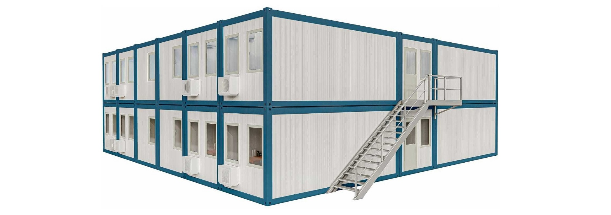

In domeniul constructiilor, eficienta si buna organizare sunt esentiale pentru respectarea termenelor si pentru fluidizarea activitatilor de pe santier. Un container de organizare a santierului este o solutie moderna si adaptabila, care permite companiilor sa gestioneze mai bine logistica, resursele si spatiul de lucru.Aceste containere pot indeplini o varietate de functii – de la birouri mobile, vestiare, pana la spatii pentru depozitare temporara a sculelor si materialelor. Prin modul lor de constructie modulara si usurinta in transport, ele sunt extrem de utile pentru santierele dinamice, indiferent de dimensiunea proiectului.
In domeniul constructiilor, eficienta si buna organizare sunt esentiale pentru respectarea termenelor si pentru fluidizarea activitatilor de pe santier. Un container de organizare a santierului este o solutie moderna si adaptabila, care permite companiilor sa gestioneze mai bine logistica, resursele si spatiul de lucru.
Contactați-ne pentru o ofertă detaliată adaptată nevoilor dumneavoastră.
Cere Oferta Acum